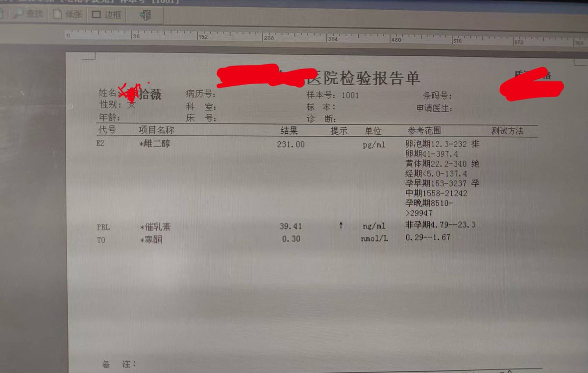
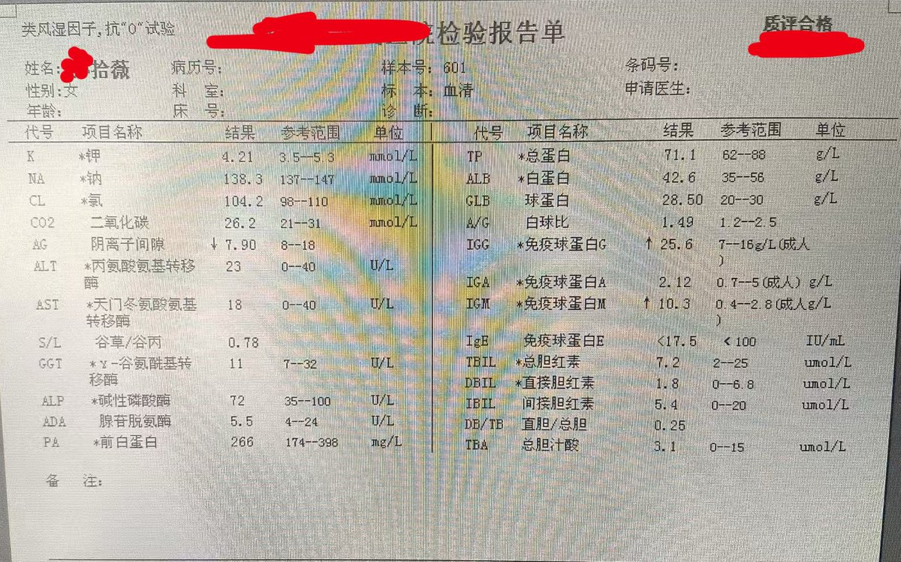
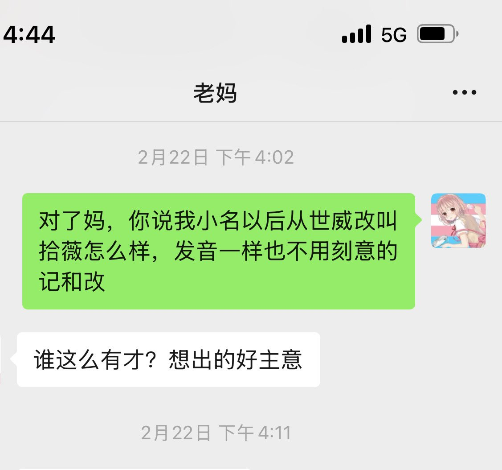
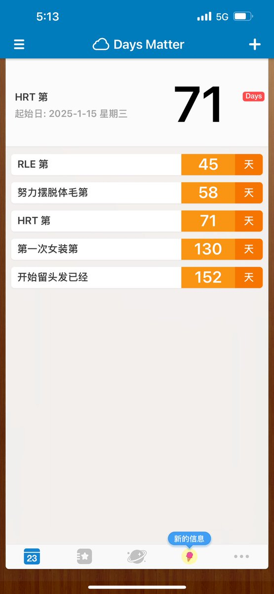

Licii🍥
@LiciiQAQ
@9485274a 羡慕家长党，，🥹




是Rinne酱呀
@9485274a
小药娘mtf吃糖两个多月血检结果（谷值）
因为咱妈就是医院检验科主任，所以就按咱喜欢的姓名和性别来打报告单了
肝功转氨酶完全正常，每日两补雌二醇能有这水平也超出我意外。只是我每36小时才吃6.25mg色为啥泌乳素还这么高，打算减到每两天6.25mg试试？ https://t.co/Abm32iavco